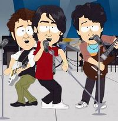
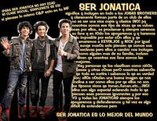

Jonática
 De: La Frikipedia, la enciclopedia extremadamente seria.
De: La Frikipedia, la enciclopedia extremadamente seria.
Quizá usted quiso decir Franquista, Believer o Directioner, pues en el fondo da igual porque todas son lo mismo
«Immbiddioozzosss»
~ Handi Jonas (nombre cambiado) Sobre las personas normales
«eso es jenial amo la pajina y a los jonas mas a nick bye»
~ Jonática Utilizando todo el poder de sus neuronas para hablar Pseudoespañol
| De la serie animales y otros bichejos:
|
|
|
| Nombre común:
|
Jonática
|
| Nombre científico:
|
Homo Masoquistus
|
| Especie:
|
Subnormal
|
| Subespecie:
|
Masoquista
|
| Alimentación:
|
El cereal de los Jonas
|
| Apariencia:
|
Fangirl Loca con Jotas y Bes por todas partes
|
| Hábitat natural:
|
Centros comerciales y Disney Chanel
|
| Localización:
|
En todo el plantea (por desgracia)
|
| Número aproximado de ejemplares:
|
Millones de millares de trillones
|
| Fecha de extinción:
|
Cuando Sean fans de Justin Bieber
|
| Pokemonización:
|
no califican
|
Jonática es el termino vulgar que denomina a una Subespecie de los Subhumanos (Homo Subnormal) cuyo nombre en Latín es Homo Masoquistus debido a su aficion por torturarse a si mismas con la música de los Jonas Brothers y con todos los productos de dicho grupo.
Actualmente se presume que están en peligro de extinción, pues muchas han pasado a ser fans de Justin Bieber, Tokio Hotel o el Reggaeton aunque en todo caso no cambia mucho su personalidad y forma de pensar, solo la foto de su camiseta...cuando la lleva puesta.
Apariencia
Las Jonáticas tienen unos preceptos de moda para identificarse entre si, hecho que la mayoría de los biólogos no entienden puesto que la mayoría de los estudios indica que las Jonáticas no tienen un coeficiente intelectual o lenguaje apropiado para formar las siguientes reglas
- Usar pantalones pitillas (como los Jonas)
- Usar lentes de sol (como los de lo Jonas o parecidos)
- Usar bufandas (como las que usa Kevin o parecidas)
- Usar un colgante con una inscripcion : JONATICAS o JONASMANIAS, etc (como la de Nick por su diabetes)
- Usar pulseritas enredadas de color dorado y negro en la muñeca (como símbolo jonatico)
- Usar pulseras con la inscripción: JONATICA S,JONAS O JONASMANIA, etc
Se sobrentiende que estas reglas fueron escritas por las mismas Jonáticas, las cuales procuran no romper ninguna de estas reglas para alcanzar el liderato en su grupo aunque en ocasiones alguna fangirl intenta crear una nueva regla para mostrar que las Jonáticas no se quedan atrasadas con el paso del tiempo aunque de forma evidente estos intentos han fallado. Disney también impuso un par de accesorios a la moda Jonática para medir la cantidad de influencia... "mental" en las fans de los Jonas y de paso para obtener mas dinero, estos son:
- Gafas 3D: Impuestas para que las jonáticas vieran la película de los Jonas en 3D, pero ninguna persona con sentido común alcanza a entender porque alguien quiere ver a un montón de adolescentes cantando en 3D cosas sin sentido ¿ estarán frustradas por no haber ido un concierto? ¿buscan venganza de la persona que obtuvo las boletas antes? ¿son estúpidas?.
- Anillo de Pureza: La forma mas fácil de vender Sexo a las niñas del mundo, este anillo se volvió popular después de la canción de los Jonas "I've got a ring" y representa la virginidad de los Jonas (la del frente, porque evidentemente han sido violados) y su compromiso cristiano (hecho que enojo mucho a Jesús y su Version Ninja) , lo cual ha causado que muchos padres protestantes les compren estos anillos a sus hijas aunque el líder de Disney pone de manifestó que estos anillos reflejan la estupidez de los cristianos.
Gustos Musicales
Su vestimenta puede ser fácilmente conseguida en cualquier Bar Gay.
No creerás que el nombre es de adorno cierto? porque no lo es ... en fin, ellas sobrestiman la ... digamos que ese ruido que hacen los Jonas Brothers cuando intentan tocar la Guitarra o el instrumento de tortura que tengan a la mano, la música que le llama la atención es precisamente la que no es música, sino ritmos pegajosos compuestos por un mono y la gente que incluso el nu-metal rechaza tales como los de Tokio Hotel , Justin Bieber, Un dúo de Zombies, Kyoto Motel, Dana Paola, Hanna Montana, Selena Gomez y Playstationforce (que nada tiene que ver con Nintendoforce).
Esto ha sido tomado por Disney y muchas otras empresas como una oportunidad fácil para vender CDs sin hacer ningún esfuerzo y ser mas ricos, pues los pobres ejecutivos de estas empresas quieren una Piscina de dinero mas honda ... incluso si es a costa de destruir toda la música compuesta por alguien con un coeficiente mayor a 70. Incluso han llegado a repetir letras y ritmos y aun peor, a robarle nombres a buenas canciones y a insultar a Los Blitos con un horrendo Cover.
Por supuesto su ignorancia musical ha llevado a las jonaticas a establecer una serie de creencias equivocadas sobre el Metal, El Punk, El Rock, Los Himnos Nacionales, las canciones de los vídeojuegos, la del heladero, La música clásica y los cantos elficos.
- El Metal es muy Satánico: Escuchando una canción de White Metal
- Los Beatles y Guns'n Roses se burlan y se copian de los Jonas:Las Jonaticas afirman que sus amados ídolos viajan en el tiempo y tocan canciones en todas las épocas de la historia, causando que grupos envidiosos de su talento se copien de ellos, esto es evidentemente falso, ya que las únicas personas que viajan en el tiempo son los brasileños.
- Los Jonas tienen canciones muy profundas: Ciertamente plantean reflexiones filosóficas dignas del Señor de las Cucarachas pues todas sus canciones se centran en le amor adolescente y lo duro que es ser rico y tener muchas fans, reflexiones típicas de un chica de 15 años, pero ellos son hombres y son mayores.
- Los Jonas son excelentes musicalmente: Amadeus Mozart escribía canciones con ese ritmo cuando 6 años ... pero luego vio que eran ridículas y se dedico a meditar para escribir piezas dignas de un teatro de opera y luego canciones para comerciales de Oscar Mayer.
- "Toda su música es basura, Metalicos": Solo se aplica en el caso del Trash Metal
- Oasis es un grupo lleno de Envidiosos: Solo porque Oasis dijo la verdad
- Los cánticos elficos son música estúpida: En realidad son la ultimas esperanza del planeta tierra para salvarse de la destrucción causada por el gran Mordor, pues el nunca soporto este genero musical a pesar de lo bien elaborado que esta, por esto se sospecha que Mordor es Jonatico.
Gustos Televisivos
 En el mejor de los casos solo hubieran hecho un cameo para morir
Toda Película y Serie de Televisión que tenga un hombre sin cerebro con cara bonita como protagonista sera sagrada para ellas, también aquellas películas donde la gente soluciona todos los problemas de la vida cantando y bailando como un montón de adolescentes con hormonas altas y para ellas es diabolico toda la television de culto como el Dr.House, The Big Bang Theory, Los Simpsons, South Park y plagio de familia escrito por manatíes. Entre sus obras favoritas se encuentran:
- Jonas:Eres un cantante muy conocido a nivel mundial y vives en una estación de bomberos abandonada y estudias en una escuela publica donde las chicas pueden acosarte por ser famoso y los hombres te pueden matar por causas muy justificadas, lo único real de esta serie es que no han terminado la secundaria a los 19 años. Normalmente incluye reflexiones sobre lo duro que es ser rico y famoso en un mundo donde toda la chusma te odia por eso, canciones sobre temas tan triviales como la chica de la pizza que solo tiene 1 estrofa y 2 coros repitiéndose por 15 minutos y apariciones fuera de cámara de Jonaticas esquizofrenicas.
- Hannah Montana: Es de lo mas común vivir en un mundo lleno de subnormales que no entienden el concepto de peluca, ¿es que acaso no es obvio? una chica extremadamente parecida a Hannah Montana es hija de su representante mientras nunca se sabe donde vive ella...es mas, la chica se quita la peluca en frente de todo el mundo un monton de veces y al parecer nadie logra procesar el hecho de que son la misma persona.
- High School Musical: Seguramente todos cuando estamos en la prepa y tenemos que decidir entre un partido de baloncesto de campeonato, una maratón de matemáticas con premio en efectivo y una pinche obra de teatro nos ponemos a cantar, también cantamos para conseguir empleo con los padres de nuestra enemiga multimillonaria que estudia en una escuela publica y cuando queremos ir a la universidad también cantamos y bailamos como chimpancés.
- Los Hechiceros de Waverly Place: No importa si la chica destruye el universo o inicia una invasión de zombies, siempre se sale con la suya mientras los otros 2 hermanos tienen que asumir que no son importantes y solo están de relleno para hacer que la chica se salga con la suya, y lo peor es que la combinan con los horrores de la saga de Crepúsculo para hacerla peor.
- Crepúsculo: La Premisa es la siguiente: "Soy un vampiro de 600 años que puede salir a la luz del sol sin problemas y me encanta el ajo, en vez de que me gusten las chicas atractivas me gusta una anormal con depresión perpetua y luchare contra el mundo para poder tenerla a mi lado" o "Soy un Hombre lobo de una tribu que habita en un lugar donde no hay lobos, soy inmune a las balas de plata y si no fuera ilegal andaría sin camisa todo el tiempo...tanto así que rompo mas que el mismísimo Hulk, también me gustan las chicas maniacas depresivas y por eso amo a Bella"
Formas de matar a una Jonática
 Ni el corrector de ortografía puede contra ellas (click para ampliar)
- Has Que Sume 2+2: Según físicos teóricos como Stephen Hawking o Sheldon Cooper, hacer que la neurona de una jonatica se active requeria romper tantas leyes fisicas que el mismo tejido del universo se vería gravemente dañado y en el mejor de los casos, su cabeza hará una explosión nuclear (si tenemos en cuenta que su cerebro es muy pequeño posiblemente solo explote el cráneo)
- Ponla a escuchar música metal: Funciona mas o menos con el mismo principio, ya que es poco probable que esta especie aguante mas de 3 notas musicales distintas seguidas, los grupos mas recomendables son los de la escena underground o la escena Friki, como Nintendoforce o las canciones de Ozzy Osbourne mas un poco de J-Rock (Otaku Metal). El caso es que va a morir, punto.
- Saca una escopeta:Pero ten cuidado porque al parecer se reproducen por mitosis, pégales el tiro en la cabeza o lo vas a lamentar, en el caso de que sean del tipo Horda Zombie, lo mas aconsejable es responder con una ataque al estilo de Pancho Villa, encabezada por un loco y su bigote parlante mágico acompañado de un tipo que ve mucho porno, una fruta y un yogurth.
- Lee en voz alta cualquier libro que no sea un cuento de disney: Su cerebro entrara en Bucle infinito y cuando te hayas dado cuenta ellas estaran sin cabeza rondando por ahí, termina el trabajo con una pistola.
- Usa los tradicionales métodos de caza de animales: Greenpeace dice que lo mejor es que en vez de torturar a los animales con esos métodos tan primitivos, lo mejor es usarlos con humanos aun mas estúpidos, asi que para darte una idea pon un CD de los Jonas en una trampa para Osos, así hay una jonatica menos, quedan 1000000000000000000.
Escuelas del Jonatismo o lo que sea
- Escuela de Nick: Las jonaticas que apoyan esta corriente extremista árabe tienen una obsesiva manía con todas las enfermedades relacionadas con el azúcar, llegando al punto de auto-inducirse diabetes para sentirse desesperadamente mas cerca de su Jonas favorito, la empresas que mas apoyan a estas jonaticas son las farmacéuticas y los fabricantes de Dulces. En todo caso lo que las hace mas famosas son sus actos de Bioterrorismo, como Robar, Destruir y esconder cargas enteras de insulina.
- Escuela de Joe: Como el miembro mas Emo de la banda, su camino consiste en guiar a sus fans a una espiral autodestructiva que se basa en cortarse las venas, hacer pies de fotos con serias faltas de ortografía y fundar una religión que adore a los perros pitbull y los trolls, también para remordimiento de los Homosexuales (especialmente el Zombie de Freddy Mercury y Rob Halford) ha decidido usar varios signos del movimiento Gay.
- Escuela de Kevin: Cualquier parecido con una paciente psiquiátrica que este obsesionada con un hombre que se caso, tuvo sexo, no lo disfruto y sea un músico mediocre es pura coincidencia para las seguidoras de esta secta, que consideran que todos los JONAS son solteros y menores de edad, su tarea como fans es matar a todas las Novias/Esposas de los Jonas por medio de un ritual de sacrificio humano de Mickey Mouse.
Fails de jonáticas
A continuación, mostraremos algunos Fails de las jonáticas.
- Afirmar que Alemania no es un país, y que no existe.
- Cuando un anti-jonática les pregunta si tienen idea de quienes fueron Marx, Hitler y Mussolini, una jonática responde "Pzz no porq no ezcucho muzica de FRACASADOS".
- Nombres de Facebook: BiiLLLiiibbeRR Jonática.
- Afirmar que Demi Lovato y los Jonas Brothers hacen rock.
- Ser una de las pocas pruebas que desmienten la Evolución.
- Gritar "WE ROCK!" en una página anti-jonas de facebook que tiene unos 600.000 fans.
- Dejar que sus paginas de Facebook sean capturadas, 40 veces
- Escuchar a los Jonas Brothers.
Autor(es):
- Fordus
- Genericool
- Axelaxel12
- Dancob
- Zarlangongo
- Antooo
- Enojada
- Camila.vasquez.184
- Nunca jamas
- Joonas
Frikipedia 2005-2016, Licencia
GFDL 1.2 - Extraído por FrikiLeaks